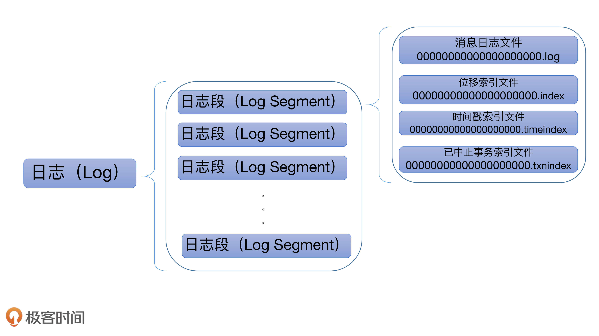
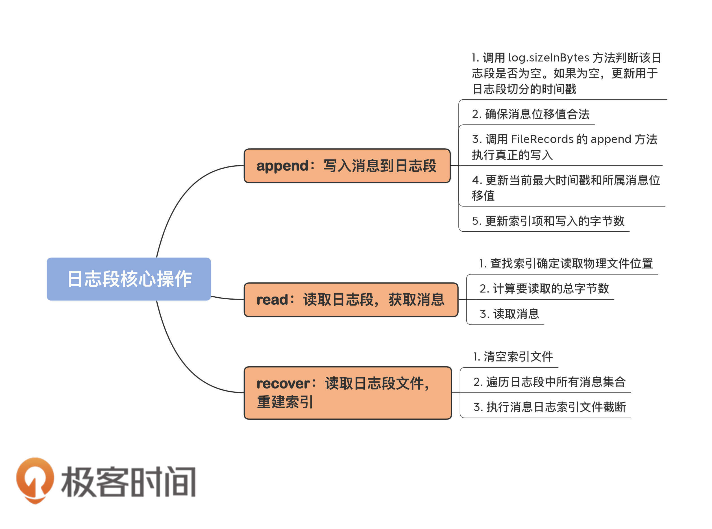

- 00 导读 构建Kafka工程和源码阅读环境、Scala语言热身.md
- 00 开篇词 阅读源码，逐渐成了职业进阶道路上的“必选项”.md
- 00 重磅加餐 带你快速入门Scala语言.md
- 01 日志段：保存消息文件的对象是怎么实现的？.md
- 02 日志（上）：日志究竟是如何加载日志段的？.md
- 03 日志（下）：彻底搞懂Log对象的常见操作.md
- 04 索引（上）：改进的二分查找算法在Kafka索引的应用.md
- 05 索引（下）：位移索引和时间戳索引的区别是什么？.md
- 06 请求通道：如何实现Kafka请求队列？.md
- 07 SocketServer（上）：Kafka到底是怎么应用NIO实现网络通信的？.md
- 08 SocketServer（中）：请求还要区分优先级？.md
- 09 SocketServer（下）：请求处理全流程源码分析.md
- 10 KafkaApis：Kafka最重要的源码入口，没有之一.md
- 11 Controller元数据：Controller都保存有哪些东西？有几种状态？.md
- 12 ControllerChannelManager：Controller如何管理请求发送？.md
- 13 ControllerEventManager：变身单线程后的Controller如何处理事件？.md
- 14 Controller选举是怎么实现的？.md
- 15 如何理解Controller在Kafka集群中的作用？.md
- 16 TopicDeletionManager： Topic是怎么被删除的？.md
- 17 ReplicaStateMachine：揭秘副本状态机实现原理.md
- 18 PartitionStateMachine：分区状态转换如何实现？.md
- 19 TimingWheel：探究Kafka定时器背后的高效时间轮算法.md
- 20 DelayedOperation：Broker是怎么延时处理请求的？.md
- 21 AbstractFetcherThread：拉取消息分几步？.md
- 22 ReplicaFetcherThread：Follower如何拉取Leader消息？.md
- 23 ReplicaManager（上）：必须要掌握的副本管理类定义和核心字段.md
- 24 ReplicaManager（中）：副本管理器是如何读写副本的？.md
- 25 ReplicaManager（下）：副本管理器是如何管理副本的？.md
- 26 MetadataCache：Broker是怎么异步更新元数据缓存的？.md
- 27 消费者组元数据（上）：消费者组都有哪些元数据？.md
- 28 消费者组元数据（下）：Kafka如何管理这些元数据？.md
- 29 GroupMetadataManager：组元数据管理器是个什么东西？.md
- 30 GroupMetadataManager：位移主题保存的只是位移吗？.md
- 31 GroupMetadataManager：查询位移时，不用读取位移主题？.md
- 32 GroupCoordinator：在Rebalance中，Coordinator如何处理成员入组？.md
- 33 GroupCoordinator：在Rebalance中，如何进行组同步？.md
- 特别放送（一）经典的Kafka学习资料有哪些？.md
- 特别放送（三）我是怎么度过日常一天的？.md
- 特别放送（二）一篇文章带你了解参与开源社区的全部流程.md
- 特别放送（五） Kafka 社区的重磅功能：移除 ZooKeeper 依赖.md
- 特别放送（四）20道经典的Kafka面试题详解.md
- 结束语 源码学习，我们才刚上路呢.md
01 日志段：保存消息文件的对象是怎么实现的？
你好，我是胡夕。
今天，我们开始学习Kafka源代码分析的第一模块：日志（Log）、日志段（LogSegment）以及索引（Index）源码。
日志段及其相关代码是Kafka服务器源码中最为重要的组件代码之一。你可能会非常关心，在Kafka中，消息是如何被保存和组织在一起的。毕竟，不管是学习任何消息引擎，弄明白消息建模方式都是首要的问题。因此，你非常有必要学习日志段这个重要的子模块的源码实现。
除此之外，了解日志段也有很多实际意义，比如说，你一定对Kafka底层日志文件00000000000000012345.log的命名感到很好奇。学过日志段之后，我相信这个问题一定会迎刃而解的。
今天，我会带你详细看下日志段部分的源码。不过在此之前，你需要先了解一下Kafka的日志结构。
Kafka日志结构概览
Kafka日志在磁盘上的组织架构如下图所示：

日志是Kafka服务器端代码的重要组件之一，很多其他的核心组件都是以日志为基础的，比如后面要讲到的状态管理机和副本管理器等。
总的来说，Kafka日志对象由多个日志段对象组成，而每个日志段对象会在磁盘上创建一组文件，包括消息日志文件（.log）、位移索引文件（.index）、时间戳索引文件（.timeindex）以及已中止（Aborted）事务的索引文件（.txnindex）。当然，如果你没有使用Kafka事务，已中止事务的索引文件是不会被创建出来的。图中的一串数字0是该日志段的起始位移值（Base Offset），也就是该日志段中所存的第一条消息的位移值。
一般情况下，一个Kafka主题有很多分区，每个分区就对应一个Log对象，在物理磁盘上则对应于一个子目录。比如你创建了一个双分区的主题test-topic，那么，Kafka在磁盘上会创建两个子目录：test-topic-0和test-topic-1。而在服务器端，这就是两个Log对象。每个子目录下存在多组日志段，也就是多组.log、.index、.timeindex文件组合，只不过文件名不同，因为每个日志段的起始位移不同。
日志段代码解析
阅读日志段源码是很有必要的，因为日志段是Kafka保存消息的最小载体。也就是说，消息是保存在日志段中的。然而，官网对于日志段的描述少得可怜，以至于很多人对于这么重要的概念都知之甚少。
但是，不熟悉日志段的话，如果在生产环境出现相应的问题，我们是没有办法快速找到解决方案的。我跟你分享一个真实案例。
我们公司之前碰到过一个问题，当时，大面积日志段同时间切分，导致瞬时打满磁盘I/O带宽。对此，所有人都束手无策，最终只能求助于日志段源码。
最后，我们在LogSegment的shouldRoll方法中找到了解决方案：设置Broker端参数log.roll.jitter.ms值大于0，即通过给日志段切分执行时间加一个扰动值的方式，来避免大量日志段在同一时刻执行切分动作，从而显著降低磁盘I/O。
后来在复盘的时候，我们一致认为，阅读LogSegment源码是非常正确的决定。否则，单纯查看官网对该参数的说明，我们不一定能够了解它的真实作用。那，log.roll.jitter.ms参数的具体作用是啥呢？下面咱们说日志段的时候，我会给你详细解释下。
那话不多说，现在我们就来看一下日志段源码。我会重点给你讲一下日志段类声明、append方法、read方法和recover方法。
你首先要知道的是，日志段源码位于 Kafka 的 core 工程下，具体文件位置是 core/src/main/scala/kafka/log/LogSegment.scala。实际上，所有日志结构部分的源码都在 core 的 kafka.log 包下。
该文件下定义了三个 Scala 对象：
- LogSegment class；
- LogSegment object；
- LogFlushStats object。LogFlushStats 结尾有个 Stats，它是做统计用的，主要负责为日志落盘进行计时。
我们主要关心的是 LogSegment class 和 object。在 Scala 语言里，在一个源代码文件中同时定义相同名字的 class 和 object 的用法被称为伴生（Companion）。Class 对象被称为伴生类，它和 Java 中的类是一样的；而 Object 对象是一个单例对象，用于保存一些静态变量或静态方法。如果用 Java 来做类比的话，我们必须要编写两个类才能实现，这两个类也就是LogSegment 和 LogSegmentUtils。在 Scala 中，你直接使用伴生就可以了。
对了，值得一提的是，Kafka 中的源码注释写得非常详细。我不打算把注释也贴出来，但我特别推荐你要读一读源码中的注释。比如，今天我们要学习的日志段文件开头的一大段注释写得就非常精彩。我截一个片段让你感受下：
A segment of the log. Each segment has two components: a log and an index. The log is a FileRecords containing the actual messages. The index is an OffsetIndex that maps from logical offsets to physical file positions. Each segment has a base offset which is an offset <= the least offset of any message in this segment and > any offset in any previous segment.
这段文字清楚地说明了每个日志段由两个核心组件构成：日志和索引。当然，这里的索引泛指广义的索引文件。另外，这段注释还给出了一个重要的事实：每个日志段都有一个起始位移值（Base Offset），而该位移值是此日志段所有消息中最小的位移值，同时，该值却又比前面任何日志段中消息的位移值都大。看完这个注释，我们就能够快速地了解起始位移值在日志段中的作用了。
日志段类声明
下面，我分批次给出比较关键的代码片段，并对其进行解释。首先，我们看下 LogSegment 的定义：
class LogSegment private[log] (val log: FileRecords,
val lazyOffsetIndex: LazyIndex[OffsetIndex],
val lazyTimeIndex: LazyIndex[TimeIndex],
val txnIndex: TransactionIndex,
val baseOffset: Long,
val indexIntervalBytes: Int,
val rollJitterMs: Long,
val time: Time) extends Logging { … }
就像我前面说的，一个日志段包含消息日志文件、位移索引文件、时间戳索引文件、已中止事务索引文件等。这里的 FileRecords 就是实际保存 Kafka 消息的对象。专栏后面我将专门讨论 Kafka 是如何保存具体消息的，也就是 FileRecords 及其家族的实现方式。同时，我还会给你介绍一下社区在持久化消息这块是怎么演进的，你一定不要错过那部分的内容。
下面的 lazyOffsetIndex、lazyTimeIndex 和 txnIndex 分别对应于刚才所说的 3 个索引文件。不过，在实现方式上，前两种使用了延迟初始化的原理，降低了初始化时间成本。后面我们在谈到索引的时候再详细说。
每个日志段对象保存自己的起始位移 baseOffset——这是非常重要的属性！事实上，你在磁盘上看到的文件名就是baseOffset的值。每个LogSegment对象实例一旦被创建，它的起始位移就是固定的了，不能再被更改。
indexIntervalBytes 值其实就是 Broker 端参数 log.index.interval.bytes 值，它控制了日志段对象新增索引项的频率。默认情况下，日志段至少新写入 4KB 的消息数据才会新增一条索引项。而 rollJitterMs 是日志段对象新增倒计时的“扰动值”。因为目前 Broker 端日志段新增倒计时是全局设置，这就是说，在未来的某个时刻可能同时创建多个日志段对象，这将极大地增加物理磁盘 I/O 压力。有了 rollJitterMs 值的干扰，每个新增日志段在创建时会彼此岔开一小段时间，这样可以缓解物理磁盘的 I/O 负载瓶颈。
至于最后的 time 参数，它就是用于统计计时的一个实现类，在 Kafka 源码中普遍出现，我就不详细展开讲了。
下面我来说一些重要的方法。
对于一个日志段而言，最重要的方法就是写入消息和读取消息了，它们分别对应着源码中的 append 方法和 read 方法。另外，recover方法同样很关键，它是Broker重启后恢复日志段的操作逻辑。
append方法
我们先来看append 方法，了解下写入消息的具体操作。
def append(largestOffset: Long,
largestTimestamp: Long,
shallowOffsetOfMaxTimestamp: Long,
records: MemoryRecords): Unit = {
if (records.sizeInBytes > 0) {
trace(s"Inserting ${records.sizeInBytes} bytes at end offset $largestOffset at position ${log.sizeInBytes} " +
s"with largest timestamp $largestTimestamp at shallow offset $shallowOffsetOfMaxTimestamp")
val physicalPosition = log.sizeInBytes()
if (physicalPosition == 0)
rollingBasedTimestamp = Some(largestTimestamp)
ensureOffsetInRange(largestOffset)
// append the messages
val appendedBytes = log.append(records)
trace(s"Appended $appendedBytes to ${log.file} at end offset $largestOffset")
// Update the in memory max timestamp and corresponding offset.
if (largestTimestamp > maxTimestampSoFar) {
maxTimestampSoFar = largestTimestamp
offsetOfMaxTimestampSoFar = shallowOffsetOfMaxTimestamp
}
// append an entry to the index (if needed)
if (bytesSinceLastIndexEntry > indexIntervalBytes) {
offsetIndex.append(largestOffset, physicalPosition)
timeIndex.maybeAppend(maxTimestampSoFar, offsetOfMaxTimestampSoFar)
bytesSinceLastIndexEntry = 0
}
bytesSinceLastIndexEntry += records.sizeInBytes
}
}
append 方法接收 4 个参数，分别表示待写入消息批次中消息的最大位移值、最大时间戳、最大时间戳对应消息的位移以及真正要写入的消息集合。下面这张图展示了 append 方法的完整执行流程：

第一步：
在源码中，首先调用 log.sizeInBytes 方法判断该日志段是否为空，如果是空的话， Kafka 需要记录要写入消息集合的最大时间戳，并将其作为后面新增日志段倒计时的依据。
第二步：
代码调用 ensureOffsetInRange 方法确保输入参数最大位移值是合法的。那怎么判断是不是合法呢？标准就是看它与日志段起始位移的差值是否在整数范围内，即 largestOffset - baseOffset的值是不是介于 [0，Int.MAXVALUE] 之间。在极个别的情况下，这个差值可能会越界，这时，append 方法就会抛出异常，阻止后续的消息写入。一旦你碰到这个问题，你需要做的是升级你的 Kafka 版本，因为这是由已知的 Bug 导致的。
第三步：
待这些做完之后，append 方法调用 FileRecords 的 append 方法执行真正的写入。前面说过了，专栏后面我们会详细介绍 FileRecords 类。这里你只需要知道它的工作是将内存中的消息对象写入到操作系统的页缓存就可以了。
第四步：
再下一步，就是更新日志段的最大时间戳以及最大时间戳所属消息的位移值属性。每个日志段都要保存当前最大时间戳信息和所属消息的位移信息。
还记得 Broker 端提供定期删除日志的功能吗？比如我只想保留最近 7 天的日志，没错，当前最大时间戳这个值就是判断的依据；而最大时间戳对应的消息的位移值则用于时间戳索引项。虽然后面我会详细介绍，这里我还是稍微提一下：时间戳索引项保存时间戳与消息位移的对应关系。在这步操作中，Kafka会更新并保存这组对应关系。
第五步：
append 方法的最后一步就是更新索引项和写入的字节数了。我在前面说过，日志段每写入 4KB 数据就要写入一个索引项。当已写入字节数超过了 4KB 之后，append 方法会调用索引对象的 append 方法新增索引项，同时清空已写入字节数，以备下次重新累积计算。
read 方法
好了，append 方法我就解释完了。下面我们来看read方法，了解下读取日志段的具体操作。
def read(startOffset: Long,
maxSize: Int,
maxPosition: Long = size,
minOneMessage: Boolean = false): FetchDataInfo = {
if (maxSize < 0)
throw new IllegalArgumentException(s"Invalid max size $maxSize for log read from segment $log")
val startOffsetAndSize = translateOffset(startOffset)
// if the start position is already off the end of the log, return null
if (startOffsetAndSize == null)
return null
val startPosition = startOffsetAndSize.position
val offsetMetadata = LogOffsetMetadata(startOffset, this.baseOffset, startPosition)
val adjustedMaxSize =
if (minOneMessage) math.max(maxSize, startOffsetAndSize.size)
else maxSize
// return a log segment but with zero size in the case below
if (adjustedMaxSize == 0)
return FetchDataInfo(offsetMetadata, MemoryRecords.EMPTY)
// calculate the length of the message set to read based on whether or not they gave us a maxOffset
val fetchSize: Int = min((maxPosition - startPosition).toInt, adjustedMaxSize)
FetchDataInfo(offsetMetadata, log.slice(startPosition, fetchSize),
firstEntryIncomplete = adjustedMaxSize < startOffsetAndSize.size)
}
read 方法接收 4 个输入参数。
- startOffset：要读取的第一条消息的位移；
- maxSize：能读取的最大字节数；
- maxPosition ：能读到的最大文件位置；
- minOneMessage：是否允许在消息体过大时至少返回第一条消息。
前3个参数的含义很好理解，我重点说下第 4 个。当这个参数为 true 时，即使出现消息体字节数超过了 maxSize 的情形，read 方法依然能返回至少一条消息。引入这个参数主要是为了确保不出现消费饿死的情况。
下图展示了 read 方法的完整执行逻辑：

逻辑很简单，我们一步步来看下。
第一步是调用 translateOffset 方法定位要读取的起始文件位置 （startPosition）。输入参数 startOffset 仅仅是位移值，Kafka 需要根据索引信息找到对应的物理文件位置才能开始读取消息。
待确定了读取起始位置，日志段代码需要根据这部分信息以及 maxSize 和 maxPosition 参数共同计算要读取的总字节数。举个例子，假设 maxSize=100，maxPosition=300，startPosition=250，那么 read 方法只能读取 50 字节，因为 maxPosition - startPosition = 50。我们把它和maxSize参数相比较，其中的最小值就是最终能够读取的总字节数。
最后一步是调用 FileRecords 的 slice 方法，从指定位置读取指定大小的消息集合。
recover 方法
除了append 和read 方法，LogSegment 还有一个重要的方法需要我们关注，它就是 recover方法，用于恢复日志段。
下面的代码是 recover 方法源码。什么是恢复日志段呢？其实就是说， Broker 在启动时会从磁盘上加载所有日志段信息到内存中，并创建相应的 LogSegment 对象实例。在这个过程中，它需要执行一系列的操作。
def recover(producerStateManager: ProducerStateManager, leaderEpochCache: Option[LeaderEpochFileCache] = None): Int = {
offsetIndex.reset()
timeIndex.reset()
txnIndex.reset()
var validBytes = 0
var lastIndexEntry = 0
maxTimestampSoFar = RecordBatch.NO_TIMESTAMP
try {
for (batch <- log.batches.asScala) {
batch.ensureValid()
ensureOffsetInRange(batch.lastOffset)
// The max timestamp is exposed at the batch level, so no need to iterate the records
if (batch.maxTimestamp > maxTimestampSoFar) {
maxTimestampSoFar = batch.maxTimestamp
offsetOfMaxTimestampSoFar = batch.lastOffset
}
// Build offset index
if (validBytes - lastIndexEntry > indexIntervalBytes) {
offsetIndex.append(batch.lastOffset, validBytes)
timeIndex.maybeAppend(maxTimestampSoFar, offsetOfMaxTimestampSoFar)
lastIndexEntry = validBytes
}
validBytes += batch.sizeInBytes()
if (batch.magic >= RecordBatch.MAGIC_VALUE_V2) {
leaderEpochCache.foreach { cache =>
if (batch.partitionLeaderEpoch > 0 && cache.latestEpoch.forall(batch.partitionLeaderEpoch > _))
cache.assign(batch.partitionLeaderEpoch, batch.baseOffset)
}
updateProducerState(producerStateManager, batch)
}
}
} catch {
case [email protected] (_: CorruptRecordException | _: InvalidRecordException) =>
warn("Found invalid messages in log segment %s at byte offset %d: %s. %s"
.format(log.file.getAbsolutePath, validBytes, e.getMessage, e.getCause))
}
val truncated = log.sizeInBytes - validBytes
if (truncated > 0)
debug(s"Truncated $truncated invalid bytes at the end of segment ${log.file.getAbsoluteFile} during recovery")
log.truncateTo(validBytes)
offsetIndex.trimToValidSize()
// A normally closed segment always appends the biggest timestamp ever seen into log segment, we do this as well.
timeIndex.maybeAppend(maxTimestampSoFar, offsetOfMaxTimestampSoFar, skipFullCheck = true)
timeIndex.trimToValidSize()
truncated
}
我依然使用一张图来说明 recover 的处理逻辑：

recover 开始时，代码依次调用索引对象的 reset 方法清空所有的索引文件，之后会开始遍历日志段中的所有消息集合或消息批次（RecordBatch）。对于读取到的每个消息集合，日志段必须要确保它们是合法的，这主要体现在两个方面：
- 该集合中的消息必须要符合 Kafka 定义的二进制格式；
- 该集合中最后一条消息的位移值不能越界，即它与日志段起始位移的差值必须是一个正整数值。
校验完消息集合之后，代码会更新遍历过程中观测到的最大时间戳以及所属消息的位移值。同样，这两个数据用于后续构建索引项。再之后就是不断累加当前已读取的消息字节数，并根据该值有条件地写入索引项。最后是更新事务型Producer的状态以及Leader Epoch缓存。不过，这两个并不是理解Kafka日志结构所必需的组件，因此，我们可以忽略它们。
遍历执行完成后，Kafka 会将日志段当前总字节数和刚刚累加的已读取字节数进行比较，如果发现前者比后者大，说明日志段写入了一些非法消息，需要执行截断操作，将日志段大小调整回合法的数值。同时， Kafka 还必须相应地调整索引文件的大小。把这些都做完之后，日志段恢复的操作也就宣告结束了。
总结
今天，我们对Kafka日志段源码进行了重点的分析，包括日志段的append方法、read方法和recover方法。
- append方法：我重点分析了源码是如何写入消息到日志段的。你要重点关注一下写操作过程中更新索引的时机是如何设定的。
- read方法：我重点分析了源码底层读取消息的完整流程。你要关注下Kafka计算待读取消息字节数的逻辑，也就是maxSize、maxPosition和startOffset是如何共同影响read方法的。
- recover方法：这个操作会读取日志段文件，然后重建索引文件。再强调一下，这个操作在执行过程中要读取日志段文件。因此，如果你的环境上有很多日志段文件，你又发现Broker重启很慢，那你现在就知道了，这是因为Kafka在执行recover的过程中需要读取大量的磁盘文件导致的。你看，这就是我们读取源码的收获。

这三个方法是日志段对象最重要的功能。你一定要仔细阅读它们，尽量做到对源码中每行代码的作用都了然于心。没有什么代码是读一遍不能理解的，如果有，那就再多读几遍。另外，我希望你特别关注下append和read方法，它们将是后面我们讨论日志对象时重点会用到的两个方法。毕竟，读写日志是Kafka最常用的操作，而日志读取底层调用的就是日志段的这两个方法。
课后讨论
如果你查看日志段源码的话，你会发现，还有一个比较重要的方法我没有提到，那就是truncateTo方法，这个方法会将日志段中的数据强制截断到指定的位移处。该方法只有20几行代码，我希望你可以自己去阅读下，然后思考这样一个问题：如果指定的位移值特别特别大，以至于超过了日志段本身保存的最大位移值，该方法对执行效果是怎么样的？
欢迎你在留言区畅所欲言，跟我交流讨论，也欢迎你把文章分享给你的朋友。
© 2019 - 2023 Liangliang Lee. Powered by Vert.x and hexo-theme-book.